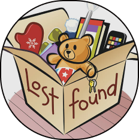

FAQs
- How do I report a lost item?
To report a lost item, log into your account and navigate to the "Report Lost Item" section. Fill in the required details like the item description, the location it was lost, and a photo (if possible). Once submitted, your post will be visible to others.
- How do I report a found item?
To report a found item, go to the "Report Found Item" section, select the category (e.g., keys, electronics), and provide relevant details such as where and when you found it. You can also upload images to help others identify the item.
- How can I search for a lost item?
Visit the "Search Items" page and use filters like item name, location, and to narrow down your search. You can view all found items and contact the person who reported them if you think something belongs to you.
- How do I claim a found item?
If you find an item that matches your lost property, contact the person who reported it using the contact information. You can then arrange for a safe handover or pickup through the Lost and Found office.
- Is my information safe on the platform?
Yes, your privacy and security are important to us. Personal details like your phone number and email are not shared with other users unless you choose to provide them. All communication happens securely through the platform.
- Can I post an item anonymously?
For safety and accountability, posting requires a valid account linked to your college email.
